An Encoding of Interaction Nets in OCaml
Nikolaus Huber & Wang Yi
Uppsala University
Agents

$\alpha, \beta, \gamma \in \Sigma$ (label set)
$ar : \Sigma \rightarrow \mathbb{N}$ (arity function)
Rules
$(\alpha \times \beta \rightarrow N) \in \mathscr{R}$ (rule set)
Rule application
- Rules are symmetric:
$(\alpha \times \beta) \rightarrow N \equiv (\beta \times \alpha) \rightarrow N$ - For each pair $\alpha \times \beta$ there is
at most one rule in $\mathscr{R}$ - Rewriting must
preserve the interface of the active pair
$\Rightarrow$ rewriting is
Typed agents

- value type (int, bool, list, ...)
- polarity ($+$, $-$)
Concurrency API
type pool
type 'a promise
type 'a resolver
val resolve : 'a resolver -> 'a -> unit
val await : 'a promise -> 'a
val block : 'a promise -> 'a
val make_future : unit -> 'a promise * 'a resolver
val create_pool : int -> pool
val run_async : pool -> (unit -> unit) -> unit
First encoding
type id =
| Alpha
| Beta
| Gamma
type agent = {
id : id;
aux_ports : agent list ref;
}
Arity constraint not enforced
Compilation of Interaction Nets
Abubakar Hassan, Ian Mackie, Shinya Sato
Electronic Notes in Theoretical Computer Science 253 (2009)
Electronic Notes in Theoretical Computer Science 253 (2009)
Outline
- Embedded Systems
- Organization
- Hardware + SDK
Embedded Systems
Embedded Systems
- Computer systems
integrated into a larger device HW + SW tailored to a specific purpose- Make up about
99% of all computer devices Pervasive character
Constraints
- Timing
- Cost
- Weight
- Power
- Memory
- Computation power
Organization
Course structure
Part 1: 1DT106, Period 3
±12 lectures, 4 labs
±12 lectures, 4 labs
Exam: March 11th, 2024
Part 2: 1DT108, Period 4
(separate application required)
(separate application required)

Lab assignments
- Labs are done
individually - Assessment:
- Must show a
working solution to one of the teachers - Code upload on Studium =>
plagiarism check
Lab topics
- State machines
- RTOS Basics
- Working with external hardware
- Verification with Frama-C
Lab kits
- Distributed during first lab
- Yours for the duration of the course
- If something breaks => inform teacher/TAs
- Property of Uppsala University
Course schedule
- On TimeEdit (look for 1DT106)
- On Studium (left menu)
- For each lab => 2 sessions
- Marked as
Lab X.1 andLab X.2 - You can work individually between the sessions
Examination
- March 11th, 2024
- On INSPERA
- 60 Points in total
- [30, 39] => 3
- [40, 49] => 4
- [50, 60] => 5
Hardware

RP2040
- Dual-core ARM Cortex-M0+
- 264kB on-chip SRAM
- 2MB on-board flash
- 2x UART, 2x SPI, 2x I2C, 16x PWM
- Programmable I/O
- USB-drive bootloader

Lab software

Pico SDK
The SDK [...] provides the headers, libraries and build system necessary to write programs
for RP2040-based devices such as Raspberry Pi Pico in C, C++ or Arm assembly language.
Raspberry Pi Pico C/C++ SDK
- SDK provided by Raspberry Pi Ltd.
- Consists of:
- Higher-level libraries (pico_xxx)
- Runtime support (e.g. pico_standard_link)
- Hardware support libraries (hardware_xxx)
- Hardware struct/register libraries
An example application
- blinky
- CMakeLists.txt
- pico_sdk_import.cmake
- main.c
main.c
#include "pico/stdlib.h"
const static uint led_pin = 0;
int main() {
gpio_init(led_pin);
gpio_set_dir(led_pin, GPIO_OUT);
for(;;){
gpio_xor_mask(1 << led_pin);
sleep_ms(500);
}
}
CMakeLists.txt
cmake_minimum_required(VERSION 3.13)
include(pico_sdk_import.cmake)
project(blinky)
pico_sdk_init()
add_executable(blinky main.c)
pico_add_extra_outputs(blinky)
target_link_libraries(blinky pico_stdlib)
Building the application
$ mkdir build
$ cd build
$ cmake ..
$ make
Going further
- Look at the recommend reading
- https://raspberrypi.github.io/pico-sdk-doxygen/index.html